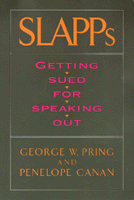

The first book to explain, document, and offer solutions to SLAPPS, by the lawyers who identified the trend and lead the battle cry against it
The first book to explain, document, and offer solutions to SLAPPS, by the lawyers who identified the trend and lead the battle cry against it


 The first book to explain, document, and offer solutions to SLAPPS, by the lawyers who identified the trend and lead the battle cry against it
The first book to explain, document, and offer solutions to SLAPPS, by the lawyers who identified the trend and lead the battle cry against it

|  |
SLAPPsGetting Sued for Speaking OutGeorge W. Pring and Penelope Cananpaper EAN: 978-1-56639-369-0 (ISBN: 1-56639-369-8) |
"Anyone who treasures and uses the First Amendment will find this first ever book on the SLAPP suit epidemic a wake up call to careful civic action."
—Ralph Nader
In a democracy that for over 200 years has prided itself on public participation and citizen involvement in government, thousands have been and will be the targets of multi-million-dollar lawsuits. They will be sued for such "all-American" activities as circulating a petition, writing a letter to the editor, testifying at a public hearing, reporting violations of the law, filing an official complaint, lobbying for legislation, or otherwise communicating their views. Such cases, named "Strategic Lawsuits Against Public Participation," with their apropos acronym, SLAPPs, are a shocking abuse of one of our most basic political rights—the Right to Petition. So extensive and grievous is the phenomenon that Justice Nicholas Colabella remarked, "Short of a gun to the head, a greater threat to First Amendment expression can scarcely be imagined."
George W. Pring and Penelope Canan explore the full range of SLAPP stories in this first study of SLAPPs— retaliatory lawsuits by real estate developers; teachers; police; politicians; opponents of civil rights; consumers' rights; women's rights; and many others. This comprehensive book examines what happens to the targets of SLAPPs and what is happening to public participation in American politics. Addressing the ultimate dilemma—what can be done to turn the tables and fight back—Pring and Canan offer concrete, well-supported, balanced solutions for preventing, managing, and curing SLAPPs at all levels of government.
Excerpt available at www.temple.edu/tempress
"This is a lively and important book documenting how SLAPPs are too often used to intimidate and punish citizens for participating in the political process. The book is a much-needed boost for grassroots democracy, which should heighten awareness of how the judicial system can be manipulated and abused to chill free debate."
—Rodney A. Smolla, Director, Institute of Bill of Rights Law, The College of William and Mary
"In this eminently lucid and accessible new book, Professors Pring and Canan solidify their rare position as innovators and problem solvers whose groundbreaking observations and insights not only coined the phrase, but energized a legal movement against the insidious abuse of legal process and rights of free expression known to the world as the 'SLAPP' suit."
—Henry R. Kaufman, First Amendment Attorney, General Counsel, Libel Defense Resource Center
"Citizen involvement plays a crucial role in effective government, particularly when it comes to enforcement of environmental laws. Lawsuits designed to chill and deter public participation hurt not only the targets, but society as a whole. Pring and Canan's book is a must for government lawyers who understand the importance of the public's right to petition and want to ensure that it continues."
—Nancy Stearns, Former Assistant Attorney General, New York State Department of Law
"...this book is a vital resource for anyone with concerns about free speech and the law. Get it for your library, your law firm and for any group of citizens planning to speak out. The frightening reality is the SLAPPs work in scaring most targets, who become less active than before. By becoming aware of the dynamics of SLAPPs, judges, lawyers and citizens can mount better defences against them."
—The Republican
"The power and limits of this book lie in its simplicity. In SLAPPs, Pring and Canan identify a problem, tell why it is serious, and offer a way to deal with it."
—Law & Society Review
Preface
1. The Onslaught of SLAPPs
Cases in Point •
The Definition: What Are "SLAPPs"? •
The Process: How SLAPPs work •
Why Not SLAPPs? Sympathy for Filers
2. The Constitution's Great Safeguard: The Right to Petition
The Theory Behind "Open Government" •
The Supreme Court and the Fact Quagmire •
The Noerr-Pennington Doctrine and the "Sham" Exception •
The Omni Case: A Success Model •
SLAPPs: More than a "Legal" Problem
3. Real Estate SLAPPs: Developers, Land Use, and Growth Turning Up the Heat
A Classic Real Estate Developer SLAPP •
A Rash of SLAPPs •
Repeat Players and Developers' Motives •
A Protective Precedent
4. The Ultimate SLAPP: Public Servants Turning on the Taxpayers
The Police SLAPP •
The School SLAPP •
The Public Official SLAPP
5. Eco-SLAPPs: Turning the Tables on the Environmental Movement
SLAPPs in the Wilderness •
"Pollution Buster" SLAPPs •
Animal Rights and Wrongs
6. "Not in My Backyard" SLAPPs: Care Homes, Landfills, and Other "LULUs" Turning Up on Our Doorsteps
The Least Objectionable LULUs •
More Objectionable LULUs •
The Most Objectionable LULUs •
The Spreading Spectrum and the Solution
7. Rights SLAPPs: Turning Against Consumers', Workers', Women's...and Your Rights
The Caveat Emptor SLAPP •
What Rights Are Left?
8. Judicial Cures: Managing the SLAPP
Managing SLAPPs Before They Happen •
Managing SLAPPs as Soon as They Happen •
Managing SLAPPs in Court
9. Judicial Cures: Managing the SLAPPback
The Birth and Growth of SLAPPbacks •
The Legal Grounds for SLAPPbacks
10. Anti-SLAPP Legislation and Other Cures
The Legislative Cure: "Anti-SLAPP Laws" •
A Model Anti-SLAPP Bill •
Executive Branch Contributions
Appendix: The SLAPPs Study Methods and Findings: A Conflict Between Democracy and Capitalism
The Study Methodology •
The Study Findings
Notes
Index
 | George W. Pring is Professor of Law at the University of Denver. |
 | Penelope Canan is Associate Professor of Sociology at the University of Denver. They are the co-directors of the Political Litigation Project at the University of Denver. |
Law and Criminology
Political Science and Public Policy
© 2015 Temple University. All Rights Reserved. This page: http://www.temple.edu/tempress/titles/1228_reg.html.